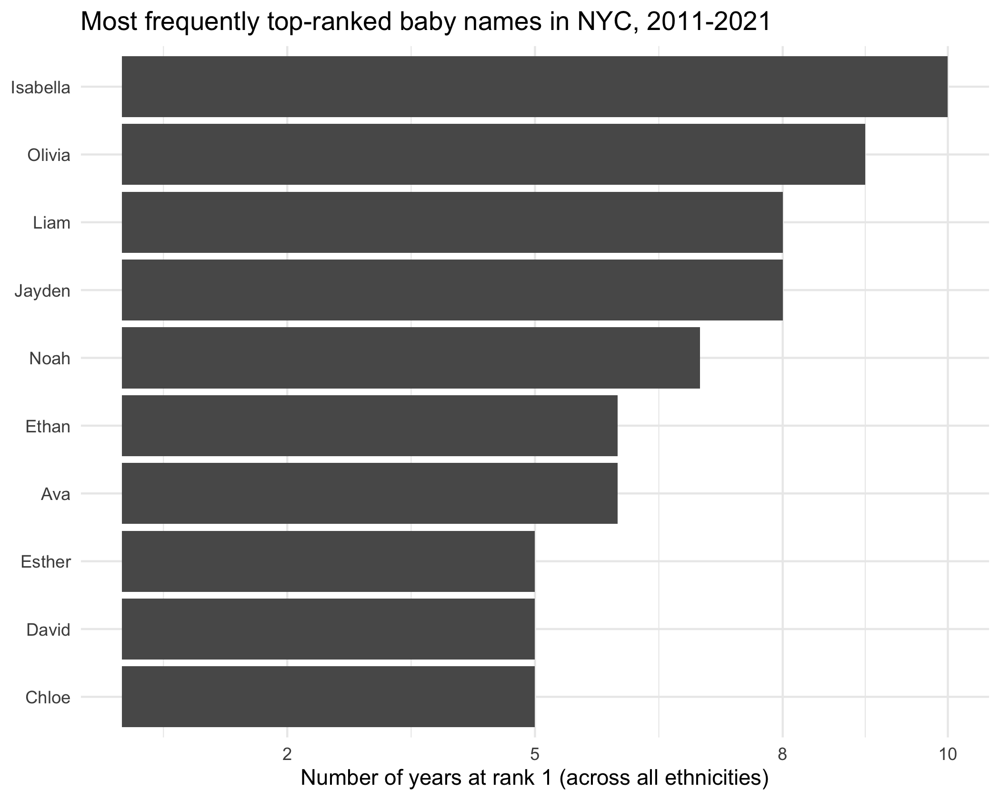

Provides a tibble of popular baby names by sex, ethnicity, and year of birth in New York City, 2011–2021. Sourced from the NYC Department of Health and Mental Hygiene via NYC Open Data.
Installation
You can install the development version of nycbabynames like so:
remotes::install_github("kjhealy/nycbabynames")Alternatively, install this package from my r-universe:
install.packages(
"nycbabynames",
repos = c("https://kjhealy.r-universe.dev", "https://cloud.r-project.org")
)Including https://cloud.r-project.org ensures dependencies on CRAN are resolved automatically.
Load
library(tidyverse)
#> ── Attaching core tidyverse packages ──────────────────────── tidyverse 2.0.0 ──
#> ✔ dplyr 1.2.1 ✔ readr 2.2.0
#> ✔ forcats 1.0.1 ✔ stringr 1.6.0
#> ✔ ggplot2 4.0.2 ✔ tibble 3.3.1
#> ✔ lubridate 1.9.5 ✔ tidyr 1.3.2
#> ✔ purrr 1.2.1
#> ── Conflicts ────────────────────────────────────────── tidyverse_conflicts() ──
#> ✖ dplyr::filter() masks stats::filter()
#> ✖ dplyr::lag() masks stats::lag()
#> ℹ Use the conflicted package (<http://conflicted.r-lib.org/>) to force all conflicts to become errors
library(nycbabynames)What’s included
Popular Baby Names
nyc_babynames_df
#> # A tibble: 21,612 × 6
#> year_of_birth sex ethnicity childs_first_name count rank
#> <dbl> <chr> <chr> <chr> <dbl> <dbl>
#> 1 2021 Female Asian and pacific islander Chloe 71 1
#> 2 2021 Female Asian and pacific islander Olivia 71 1
#> 3 2021 Female Asian and pacific islander Emma 66 2
#> 4 2021 Female Asian and pacific islander Mia 59 3
#> 5 2021 Female Asian and pacific islander Ava 53 4
#> 6 2021 Female Asian and pacific islander Amelia 46 5
#> 7 2021 Female Asian and pacific islander Evelyn 44 6
#> 8 2021 Female Asian and pacific islander Sophia 43 7
#> 9 2021 Female Asian and pacific islander Aria 42 8
#> 10 2021 Female Asian and pacific islander Emily 39 9
#> # ℹ 21,602 more rowsThe dataset contains 21,612 records across 11 years.
Example
nyc_babynames_df |>
filter(rank == 1) |>
count(childs_first_name, sex, sort = TRUE) |>
slice_head(n = 10) |>
ggplot(aes(x = n, y = fct_reorder(childs_first_name, n))) +
geom_col() +
scale_x_continuous(breaks = c(2, 5, 8, 10)) +
labs(
x = "Number of years at rank 1 (across all ethnicities)",
y = NULL,
title = "Most frequently top-ranked baby names in NYC, 2011-2021"
) +
theme_minimal()